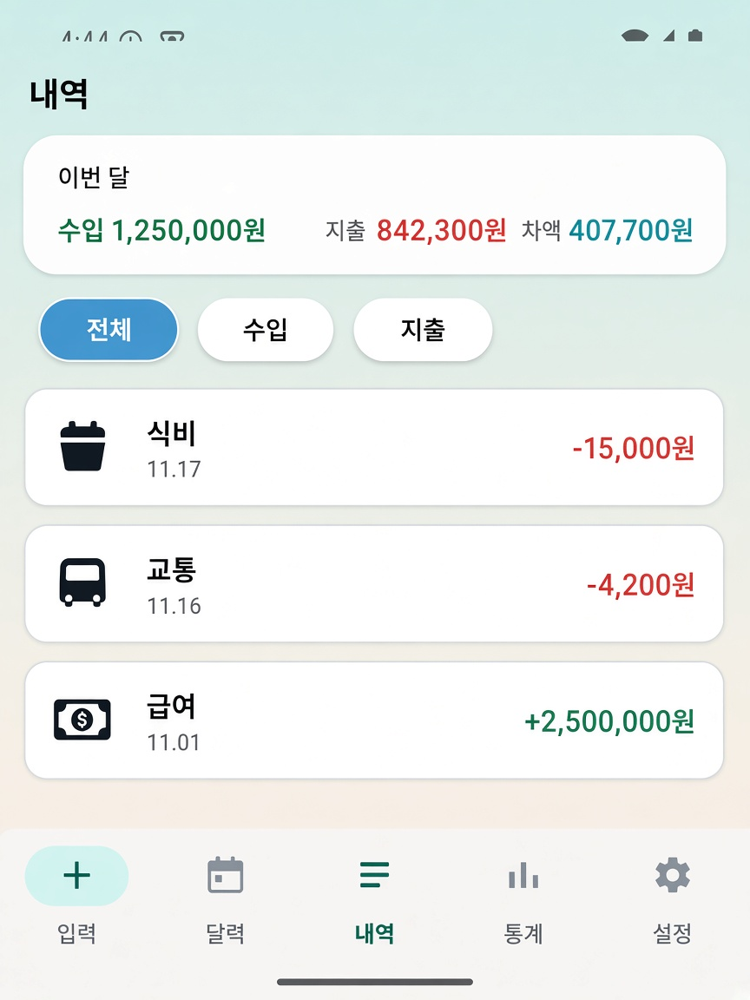
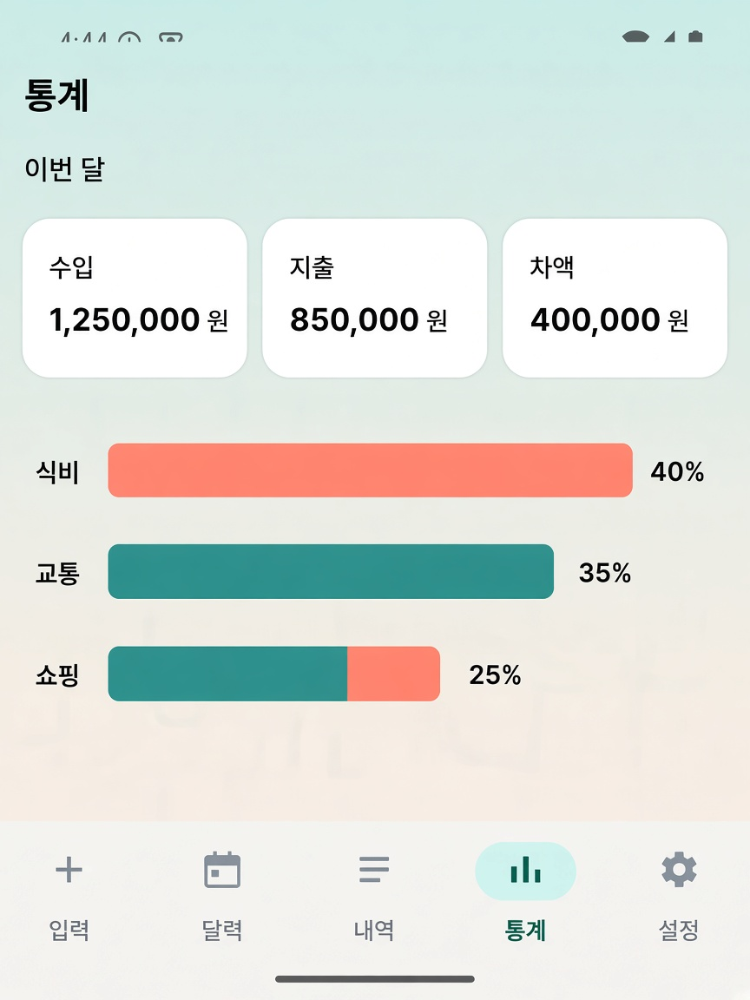
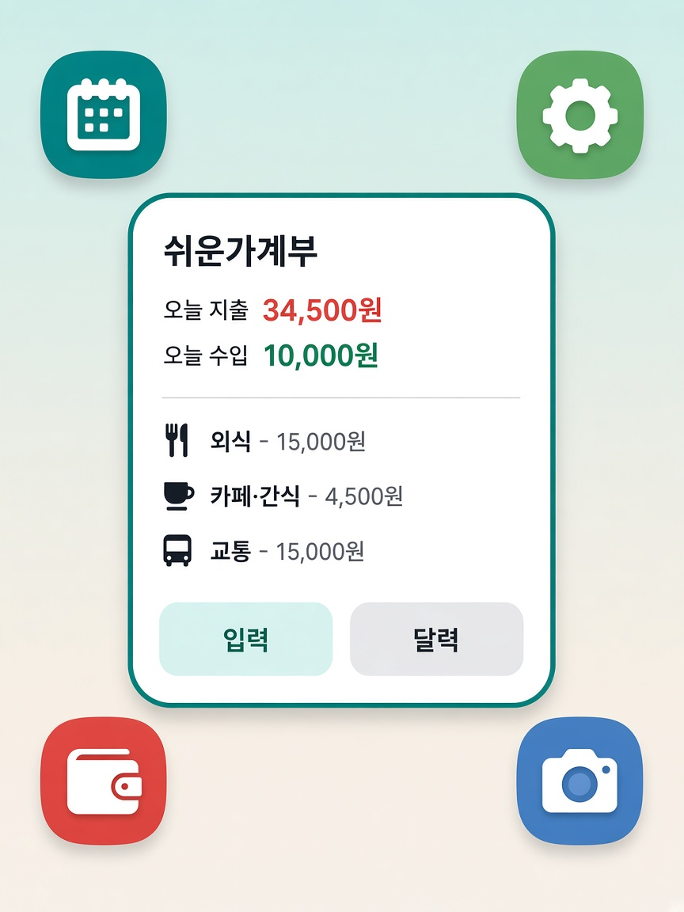

입력
지출/수입을 고르고 카테고리를 누르면 바로 금액을 적을 수 있어요.쉬운가계부는 클라우드 없이 이 기기 안에서만 쓰는 개인 가계부예요. 카테고리만 고르면 금액 키패드가 바로 열리고, 달력·내역·통계로 한 달을 한눈에 볼 수 있어요. 급여·월세 같은 고정비와 홈 화면 위젯까지 챙겨 줍니다.
“식비 적는 시간이 짧아졌어요”
키패드 · 자주 쓰는 금액
“목록 내려도 달 합계가 보여요”
내역 상단 고정 합계
“홈에서 바로 오늘 지출 확인”
위젯 · 빠른 입력
입력부터 달력·내역·통계·홈 위젯까지, 실제 앱 흐름을 미리 확인해 보세요. 좌우로 밀어 보면 더 볼 수 있어요.
입력
지출/수입을 고르고 카테고리를 누르면 바로 금액을 적을 수 있어요.
달력
날짜별 합계와 그날 내역을 보고, +로 그 날짜에 바로 기록해요.
내역
이번 달 합계가 위에 고정되고, 검색·필터로 필요한 기록만 모아요.
통계
기간별 수입·지출·차액과 카테고리 비중을 한눈에 확인해요.
홈 위젯
앱을 열지 않아도 오늘 수입·지출과 최근 내역을 볼 수 있어요.더 빠르게 남기고, 더 편하게 돌아보고, 놓치기 쉬운 기록까지 살짝 챙겨 주도록 다듬었어요. 새 소식 전체 보기 →
오늘 수입·지출 합계와 내역을 한눈에. ‘입력’으로 바로 기록하고, ‘달력’으로 오늘 날짜를 자세히 볼 수 있어요. 크기도 조절됩니다.
“이번 달 식비”처럼 자주 쓰는 필터를 이름으로 저장해 두고, 매달 같은 조건을 한 번에 불러오세요.
오늘 아직 기록이 없거나, 내일 고정비가 예정되어 있으면 살짝 알려 드려요.
날짜 화살표에 더해 어제·오늘 버튼과 000 키로 금액 입력이 훨씬 짧아집니다.
달력에서 +로 들어가 저장하면, 방금 고른 날짜의 달력으로 다시 돌아갑니다.
목록을 스크롤해도 위쪽에 이번 달 수입·지출·차액이 그대로 남아요.
복잡한 가계부가 아니라, “오늘 쓴 돈만 남기고 한 달을 돌아보고 싶을 때” 쓰는 앱이에요.
가계부 앱이 많지만, 가입·동기화 때문에 손이 가기도 해요. 쉬운가계부는 그 부담을 빼 두고 카테고리 → 금액 → 저장만 남겼습니다. 한 달이 지나면 달력과 통계로 “어디에 썼지?”를 바로 확인하고, 급여·월세처럼 반복되는 돈은 규칙으로 자동 반영합니다.
수입/지출을 고르고 카테고리를 누르면 키패드가 바로 열립니다. 자주 쓰는 금액, 00·000, 어제·오늘로 손이 덜 가요.
달력에서 날짜별 흐름을 보고, 내역·통계로 합계와 카테고리 비중을 확인하세요. 차액은 ‘총수입 − 총지출’이에요.
급여, 월세처럼 반복되는 항목은 규칙만 등록하면 해당 날짜에 반영됩니다. 멈춰도 이미 쌓인 기록은 그대로예요.
로그인·클라우드 동기화가 없습니다. 백업 파일로 옮길 수 있고, 복원 전에는 꼭 한 번 더 확인해 주세요.
매일 조금씩 쓰는 돈부터, 한 달 결산까지 — 부담 없이 남기고 싶을 때.
커피·식비·교통을 그날그날 빠르게 남겨요. 자주 쓰는 금액과 000 키로 입력이 짧아집니다.
달력과 통계로 “어디에 썼지?”를 바로 확인해요. 차액으로 이번 달 남긴 금액을 봅니다.
월세·통신비·구독료를 규칙으로 등록해 두면, 해당 날짜에 자동으로 반영돼요.
저장된 검색으로 식비·쇼핑만 따로 모아 봐요. 매달 같은 조건을 한 번에 불러옵니다.
위젯으로 오늘 지출을 보고 바로 입력해요. 크기를 키우면 목록이 더 많이 보입니다.
가입 없이, 이 기기 안에서만 가볍게. 필요할 때만 파일로 백업하세요.
어려운 말 없이, 일상에서 바로 쓰는 기능을 화면과 함께 살펴보세요.
지출/수입 토글 후 카테고리를 고르면 금액 키패드가 바로 열립니다. 결제수단·메모도 같은 흐름에서 남길 수 있어요.
날짜를 누르면 그날 수입·지출과 내역이 보입니다. + 버튼으로 그 날짜 입력으로 들어가고, 저장 후에는 다시 그 날짜 달력으로 돌아와요.
목록을 내려도 이번 달 수입·지출·차액이 상단에 남아 있어요. 전체/수입/지출 토글과 카테고리·메모·금액·기간·결제수단 검색으로 필요한 기록만 모을 수 있습니다.
기간을 고르면 수입·지출·차액과 카테고리 비중을 보여 줍니다. 결산할 때 “식비가 얼마나 나갔지?”를 바로 확인할 수 있어요.
홈 화면 위젯으로 오늘 수입·지출을 보고 ‘입력’·‘달력’으로 바로 이어집니다. 급여·월세 같은 고정비는 규칙만 등록하면 날짜에 반영되고, 파일 백업으로 기기 이전에도 대비할 수 있어요.
처음이어도 괜찮아요. 앱 안 「앱 정보」에도 같은 안내가 있어요.
Google Play에서 「쉬운가계부」를 설치한 뒤, 처음 실행에서 자주 쓸 카테고리만 골라 주세요. 나중에 설정에서 더 추가할 수 있어요.
입력 탭에서 지출/수입 → 카테고리 → 금액 → 저장. 어제·오늘 버튼과 자주 쓰는 금액으로 더 빠르게.
달력에서 날짜를 누르거나, 내역에서 이번 달 합계와 검색으로 필요한 기록만 모아 보세요.
홈 화면에 위젯을 추가하고, 설정에서 반복되는 수입·지출 규칙을 등록해 두면 매일이 더 편해져요.
원칙은 단순해요. 기록은 이 기기에만, 서버로 올리지 않아요.
이메일·비밀번호·소셜 로그인 없이 바로 씁니다.
거래·카테고리·설정은 기기 안 저장소에 보관됩니다. 클라우드 동기화는 없어요.
설정에서 파일로 백업하거나 복원할 수 있어요. 복원하면 현재 데이터가 바뀌니 신중히 진행해 주세요.
미기록·고정비 안내를 받으려면 알림을 허용해 주세요. 원치 않으면 시스템 설정에서 끌 수 있어요.
궁금한 점을 먼저 모아 두었어요.
네. 인앱 결제·구독 없이 사용할 수 있어요.
설정 → 백업에서 파일을 저장한 뒤, 새 기기에서 복원하면 됩니다. 복원 전 현재 데이터는 덮어쓰이니 주의해 주세요.
아니요. 선택한 기간의 총수입에서 총지출을 뺀 값이에요. “이번 달 얼마나 남겼나”를 보는 숫자입니다.
홈 화면을 길게 누르거나 위젯 추가 메뉴에서 「쉬운가계부」를 찾아 추가해 주세요. 크기를 키우면 목록이 더 많이 보입니다.
앱 정보 또는 아래 메일 onamt@naver.com으로 보내 주세요. 만든이 SUNWOO가 확인합니다.